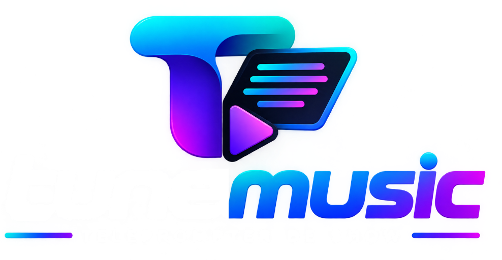

Ambiente integrado para teleprompter de palco ao vivo, geração de vídeo sincronizado e suíte profissional de áudio.
🎧 Suíte de Áudio
5 Ferramentas IntegradasMudar Tom & BPM
Ajuste o tom musical em semitons e a velocidade de reprodução com algoritmo WebAssembly SoundTouch.
WASM SoundTouch
Detector Tom e BPM
Análise espectral inteligente de acordes e batimentos por minuto via motor Essentia DSP.
Essentia DSP
Cortador de Áudio
Edição precisa de faixas, remoção de introduções longas e corte com precisão milimétrica.
Waveform Editor
Juntar Áudios
Combine múltiplas músicas, medleys e vinhetas em um único arquivo contínuo sem emendas.
Medley & Join
Gravador de Voz
Grave áudios, ensaios e ideias melódicas com redução de ruído integrada e alta definição.
HD Studio Mic
📺 Suíte de Palco & Show Ao Vivo (tunemusic)
8 Módulos de PalcoTeleprompter Ao Vivo
Exibição de letras em alta nitidez com rolagem suave, estrofes sincronizadas e controle de palco.
Modo Palco
Repertório & Setlists
Monte o setlist do show por blocos temáticos, organize a ordem das músicas e controle o tempo.
Setlist Builder
Buscar Letras Online
Pesquisa ultra rápida na nuvem: encontre a letra completa e formatada de qualquer música.
Auto Formatação
Minhas Músicas
Biblioteca local de letras armazenadas no computador, com backup e acesso 100% offline.
Offline Ready
Telão HDMI / 2ª Tela
Espelhamento automático em tela cheia para retorno de músicos, TV de palco ou painéis LED.
Zero Latência
Gerar Vídeo MP4
Renderize o teleprompter em vídeo MP4 sincronizado para rodar em DAWs (Reaper, Pro Tools).
Vídeo Sync
Transcrição IA
Músicas inéditas ou ensaios gravados? A inteligência artificial transcreve e estrutura a letra.
Voz para Texto
Mensagens & Avisos
Exiba agradecimentos, patrocinadores e avisos no telão instantaneamente durante o show.
Transmissão Telão
Minhas Músicas
Meus Shows
Nenhum show criado ainda
0 / 0
Digite uma música por linha, separando o nome da música e o cantor com um traço (ex.: Evidências - Chitãozinho e Xororó).
Cada cartão é um bloco do show. Para criar a próxima parte, clique em + Bloco.
Iniciar Show
Escolha o show que vai apresentarAgradecimentos
20
20
Separador Vocal & Isolamento Instrumental
Isole vozes e crie playbacks perfeitos com Inteligência Artificial Demucs v4 e envie direto para o teleprompter de palco
Arraste e solte o arquivo de áudio aqui
MP3, WAV, FLAC, M4A, OGG, AAC, WMA • Sem limite de tamanho
🎵 Áudios e Playbacks Já Processados
0 faixasCarregando faixas locais...